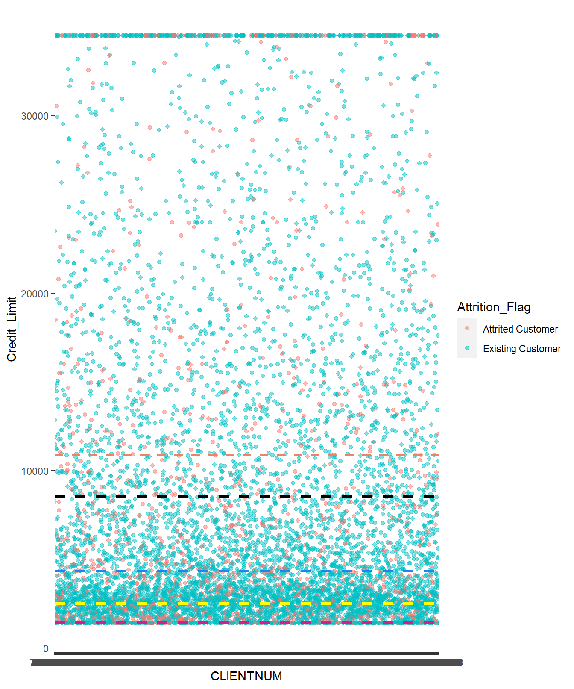
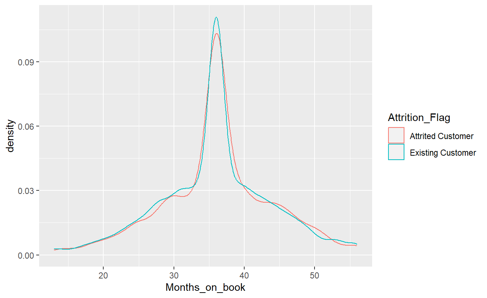
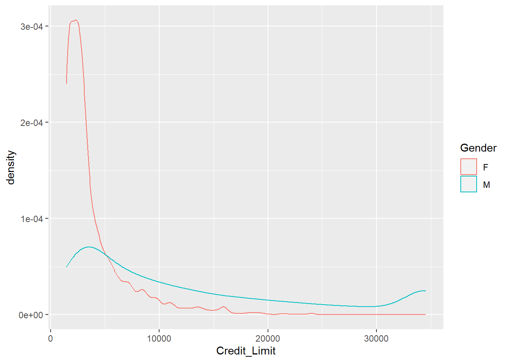

data <- read_csv("CreditLimit.csv") %>%
mutate(CLIENTNUM = as.character(CLIENTNUM))Credit Limit
Credit Limit Dataset
head(data)# A tibble: 6 × 14
CLIENTNUM Attrition_Flag Customer_Age Gender Dependent_count Education_Level
<chr> <chr> <dbl> <chr> <dbl> <chr>
1 768805383 Existing Custom… 45 M 3 High School
2 818770008 Existing Custom… 49 F 5 Graduate
3 713982108 Existing Custom… 51 M 3 Graduate
4 769911858 Existing Custom… 40 F 4 High School
5 709106358 Existing Custom… 40 M 3 Uneducated
6 713061558 Existing Custom… 44 M 2 Graduate
# ℹ 8 more variables: Marital_Status <chr>, Income_Category <chr>,
# Card_Category <chr>, Months_on_book <dbl>, Credit_Limit <dbl>,
# Total_Trans_Amt <dbl>, Total_Ct_Chng_Q4_Q1 <dbl>,
# Avg_Utilization_Ratio <dbl>summary(droplevels(data)) CLIENTNUM Attrition_Flag Customer_Age Gender
Length:7641 Length:7641 Min. :26.0 Length:7641
Class :character Class :character 1st Qu.:41.0 Class :character
Mode :character Mode :character Median :46.0 Mode :character
Mean :46.3
3rd Qu.:52.0
Max. :73.0
Dependent_count Education_Level Marital_Status Income_Category
Min. :0.000 Length:7641 Length:7641 Length:7641
1st Qu.:1.000 Class :character Class :character Class :character
Median :2.000 Mode :character Mode :character Mode :character
Mean :2.352
3rd Qu.:3.000
Max. :5.000
Card_Category Months_on_book Credit_Limit Total_Trans_Amt
Length:7641 Min. :13.00 Min. : 1438 Min. : 510
Class :character 1st Qu.:31.00 1st Qu.: 2507 1st Qu.: 2109
Mode :character Median :36.00 Median : 4343 Median : 3866
Mean :35.95 Mean : 8559 Mean : 4415
3rd Qu.:40.00 3rd Qu.:10877 3rd Qu.: 4751
Max. :56.00 Max. :34516 Max. :17995
Total_Ct_Chng_Q4_Q1 Avg_Utilization_Ratio
Min. :0.0000 Min. :0.0000
1st Qu.:0.5830 1st Qu.:0.0250
Median :0.7000 Median :0.1840
Mean :0.7115 Mean :0.2807
3rd Qu.:0.8180 3rd Qu.:0.5130
Max. :3.7140 Max. :0.9990 summary(data$Credit_Limit) Min. 1st Qu. Median Mean 3rd Qu. Max.
1438 2507 4343 8559 10877 34516 Variables
| CLIENTNUM | Client number. Unique identifier for the customer holding the account. |
| Attrition_Flag | Internal event (customer activity) variable - if the account is closed then 1 else 0 |
| Customer_Age | Demographic variable - Customer’s Age in Years |
| Gender | Demographic variable - M=Male, F=Female |
| Dependent_count | Demographic variable - Number of dependents |
| Education_Level | Demographic variable - Educational Qualification of the account holder (example: high school, college graduate, etc.) |
| Marital_Status | Demographic variable - Married, Single, Divorced, Unknown |
| Income_Category | Demographic variable - Annual Income Category of the account holder (< $40K, $40K - 60K, $60K - $80K, $80K-$120K, > |
| Card_Category | Product Variable - Type of Card (Blue, Silver, Gold, Platinum) |
| Months_on_book | Period of relationship with bank |
| Credit_Limit | Credit Limit on the Credit Card |
| Total_Trans_Amt | Total Transaction Amount (Last 12 months) |
| Total_Trans_Ct | Total Transaction Count (Last 12 months) |
| Avg_Utilization_Ratio | Average Card Utilization Ratio |
p1 <- data %>% group_by(Attrition_Flag) %>%
#filter(Credit_Limit>10000) %>%
ggplot(aes(x=CLIENTNUM,y=Credit_Limit))+
geom_point(aes(color=Attrition_Flag), alpha=0.5)+
geom_hline(yintercept=10877, linetype="dashed", color = "salmon2", linewidth=1.)+
geom_hline(yintercept=8559, linetype="dashed", color = "black", linewidth=1.1)+
geom_hline(yintercept=4343, linetype="dashed", color = "dodgerblue2", linewidth=1.1)+
geom_hline(yintercept= 2507, linetype="dashed", color = "yellow", linewidth=1.1)+
geom_hline(yintercept= 1438, linetype="dashed", color = "violetred", linewidth=1.1)
p1
favstats(Credit_Limit ~ Attrition_Flag , data=data) Attrition_Flag min Q1 median Q3 max mean sd n
1 Attrited Customer 1438.3 2056.50 4109 9954.00 34516 8222.205 9249.033 1211
2 Existing Customer 1438.3 2570.25 4421 10989.25 34516 8622.648 9145.102 6430
missing
1 0
2 0data %>% ggplot(aes(Credit_Limit))+geom_density(aes(color=Attrition_Flag))data %>%
group_by(Attrition_Flag) %>%
ggplot(aes(x=Credit_Limit, y = Attrition_Flag)) +
geom_boxplot(color="orange") +
geom_smooth(se=FALSE, method = "lm")favstats(Credit_Limit ~ Months_on_book , data=data) Months_on_book min Q1 median Q3 max mean sd n
1 13 1438.3 2028.50 3290.0 5894.00 28174 5046.153 5146.893 43
2 14 2163.0 3232.50 4015.0 7252.00 14853 5757.182 3703.339 11
3 15 1438.3 2166.00 3682.0 4662.00 23399 5022.743 5117.804 21
4 16 1438.3 2546.00 3665.0 10705.00 34516 7595.600 8555.871 21
5 17 1438.3 2624.75 3336.5 6668.25 34516 6010.706 6634.134 32
6 18 1438.3 2082.50 2963.0 5689.50 34516 5759.812 7080.179 43
7 19 1438.3 2907.75 4161.0 8661.25 34516 7744.485 8510.888 48
8 20 1438.3 2235.00 4342.0 10486.00 34516 7972.861 8818.530 57
9 21 1438.3 2272.00 3433.0 6315.00 34516 6768.005 7905.755 65
10 22 1438.3 2049.75 3243.5 8669.75 34516 7828.247 9791.350 76
11 23 1438.3 2400.00 3955.0 7567.00 34516 6741.265 7223.764 93
12 24 1438.3 3263.50 4739.0 11314.25 34516 8527.339 8109.368 114
13 25 1438.3 2316.50 4364.0 9260.00 34516 7088.698 6776.503 130
14 26 1438.3 2375.25 3447.0 7305.50 34516 7318.260 8422.210 136
15 27 1438.3 2247.00 3901.0 11820.00 34516 8194.087 8719.341 163
16 28 1438.3 2495.00 4372.5 10253.50 34516 8121.264 8590.697 218
17 29 1438.3 2592.50 4394.0 11788.00 34516 8789.574 9377.311 179
18 30 1438.3 2579.00 4579.0 11463.00 34516 8532.811 8663.696 229
19 31 1438.3 2635.75 5017.5 12784.75 34516 9539.566 9936.856 244
20 32 1438.3 2624.00 4429.0 13162.00 34516 9898.546 10456.203 217
21 33 1438.3 2645.00 5651.0 13480.75 34516 9923.707 10121.727 238
22 34 1438.3 2545.00 5057.0 13561.50 34516 9090.720 8849.921 260
23 35 1438.3 2555.00 4505.0 11096.00 34516 8902.528 9605.196 253
24 36 1438.3 2464.00 4129.0 10350.00 34516 8451.874 9302.606 1833
25 37 1438.3 2589.00 4820.0 13119.00 34516 9557.691 10001.451 268
26 38 1438.3 2655.00 5481.0 12836.00 34516 10051.152 10200.089 261
27 39 1438.3 2751.75 5758.0 12740.75 34516 9506.061 9369.716 252
28 40 1438.3 2684.75 4545.0 11228.50 34516 8689.877 9144.020 258
29 41 1438.3 2596.00 4745.0 11669.00 34516 9122.250 9442.085 221
30 42 1438.3 2500.00 5168.0 13813.50 34516 10071.779 10577.280 199
31 43 1438.3 2239.25 3722.5 8389.50 34516 7435.673 8297.608 206
32 44 1438.3 2599.50 4153.0 11446.50 34516 8962.704 9799.856 179
33 45 1438.3 2312.00 4531.0 13287.00 34516 9243.281 9668.996 173
34 46 1438.3 2388.50 4629.0 10201.50 34516 8308.921 8748.402 151
35 47 1438.3 2497.25 4421.0 9407.00 34516 7412.955 7570.954 138
36 48 1438.3 2551.00 3776.5 10054.50 34516 8073.854 8913.868 118
37 49 1438.3 2414.00 3949.0 9788.00 34516 7858.370 9007.222 105
38 50 1438.3 2854.50 4974.5 12030.50 34516 8615.849 8216.227 76
39 51 1438.3 2130.50 5042.0 9497.00 34516 7787.571 8350.055 59
40 52 1438.3 2443.00 3088.0 10527.00 34516 8017.975 9053.521 44
41 53 1438.3 2503.50 3374.5 6283.50 34516 6960.425 8382.022 68
42 54 1438.3 2889.50 4890.5 10158.75 31680 7939.115 7426.462 40
43 55 1438.3 2419.00 3556.0 9922.50 34516 7287.722 8001.582 23
44 56 1438.3 2552.25 3544.0 6932.75 29100 5135.254 4196.346 78
missing
1 0
2 0
3 0
4 0
5 0
6 0
7 0
8 0
9 0
10 0
11 0
12 0
13 0
14 0
15 0
16 0
17 0
18 0
19 0
20 0
21 0
22 0
23 0
24 0
25 0
26 0
27 0
28 0
29 0
30 0
31 0
32 0
33 0
34 0
35 0
36 0
37 0
38 0
39 0
40 0
41 0
42 0
43 0
44 0data %>%
group_by(Attrition_Flag) %>%
ggplot(aes(x=Months_on_book, y = Attrition_Flag)) +
geom_boxplot(color= "red") +
geom_smooth(se=FALSE, method = "lm")data %>% ggplot(aes(Months_on_book))+geom_density(aes(color=Attrition_Flag))
favstats(Credit_Limit ~ Education_Level , data=data) Education_Level min Q1 median Q3 max mean sd n
1 College 1438.3 2492.00 4312.0 10797.00 34516 8702.469 9458.070 905
2 Doctorate 1438.3 2360.00 4142.0 9966.00 34516 8158.551 8889.491 381
3 Graduate 1438.3 2519.25 4390.0 10608.75 34516 8465.664 9087.757 2796
4 High School 1438.3 2561.00 4253.5 10475.00 34516 8437.665 9002.617 1788
5 Post-Graduate 1438.3 2566.00 4453.0 11236.00 34516 8690.469 9302.215 469
6 Uneducated 1438.3 2475.50 4448.5 11711.75 34516 8897.239 9361.034 1302
missing
1 0
2 0
3 0
4 0
5 0
6 0data %>% ggplot(aes(Credit_Limit))+geom_density(aes(color=Education_Level))favstats(Credit_Limit ~ Gender , data=data) Gender min Q1 median Q3 max mean sd n missing
1 F 1438.3 2035 2831.5 4548.75 23981 3965.095 3185.273 3626 0
2 M 1438.3 3770 8851.0 19068.50 34516 12708.166 10692.579 4015 0data %>% ggplot(aes(Credit_Limit))+geom_density(aes(color=Gender))
favstats(Credit_Limit ~ Marital_Status , data=data) Marital_Status min Q1 median Q3 max mean sd n
1 Divorced 1438.3 2543.00 4701.0 10991.00 34516 9035.851 9545.679 569
2 Married 1438.3 2494.75 4138.5 9824.25 34516 8006.741 8634.839 3564
3 Single 1438.3 2484.00 4508.0 11677.25 34516 8975.545 9581.458 2948
4 Unknown 1438.3 2650.25 4942.0 13141.25 34516 9398.906 9576.261 560
missing
1 0
2 0
3 0
4 0data %>% ggplot(aes(Credit_Limit))+geom_density(aes(color=Marital_Status))favstats(Credit_Limit ~ Income_Category , data=data) Income_Category min Q1 median Q3 max mean sd n
1 $120K + 1438.3 8053.0 18214.0 34516.00 34516 19535.017 12111.664 607
2 $40K - $60K 1438.3 2441.0 3659.0 6629.00 23981 5384.891 4446.492 1521
3 $60K - $80K 1438.3 3603.5 7688.0 15360.50 34516 10772.924 8889.838 1192
4 $80K - $120K 1438.3 5700.5 13246.5 25615.25 34516 16072.945 11295.974 1316
5 Less than $40K 1438.3 2020.0 2781.0 4311.00 15987 3780.107 2782.746 3005
missing
1 0
2 0
3 0
4 0
5 0data %>% ggplot(aes(Credit_Limit))+geom_density(aes(color=Income_Category))Linear Regression
\[ \text{Credit_Limit} = \beta_0 + \beta_1 (\text{Parameters}) + \varepsilon \]
lmcreditlimit <- lm(Credit_Limit ~ . -CLIENTNUM, data)
summary(lmcreditlimit)
Call:
lm(formula = Credit_Limit ~ . - CLIENTNUM, data = data)
Residuals:
Min 1Q Median 3Q Max
-22144.9 -3357.2 159.6 2499.3 20707.3
Coefficients:
Estimate Std. Error t value Pr(>|t|)
(Intercept) 1.624e+04 6.560e+02 24.751 < 2e-16 ***
Attrition_FlagExisting Customer 1.281e+03 1.903e+02 6.729 1.83e-11 ***
Customer_Age 1.457e+01 1.326e+01 1.099 0.271747
GenderM 4.273e+02 2.334e+02 1.831 0.067144 .
Dependent_count 1.573e+02 5.084e+01 3.095 0.001978 **
Education_LevelDoctorate -2.168e+02 3.444e+02 -0.630 0.528973
Education_LevelGraduate 1.111e+02 2.155e+02 0.516 0.606039
Education_LevelHigh School 1.674e+01 2.299e+02 0.073 0.941959
Education_LevelPost-Graduate 3.247e+02 3.207e+02 1.012 0.311459
Education_LevelUneducated 3.756e+02 2.439e+02 1.540 0.123591
Marital_StatusMarried -9.346e+02 2.550e+02 -3.665 0.000249 ***
Marital_StatusSingle -3.433e+02 2.582e+02 -1.330 0.183642
Marital_StatusUnknown -3.892e+02 3.356e+02 -1.160 0.246271
Income_Category$40K - $60K -1.173e+04 3.047e+02 -38.488 < 2e-16 ***
Income_Category$60K - $80K -8.010e+03 2.821e+02 -28.394 < 2e-16 ***
Income_Category$80K - $120K -3.046e+03 2.770e+02 -10.995 < 2e-16 ***
Income_CategoryLess than $40K -1.247e+04 3.352e+02 -37.213 < 2e-16 ***
Card_CategoryGold 1.627e+04 6.055e+02 26.871 < 2e-16 ***
Card_CategoryPlatinum 1.626e+04 1.633e+03 9.958 < 2e-16 ***
Card_CategorySilver 1.343e+04 2.875e+02 46.706 < 2e-16 ***
Months_on_book -6.559e-01 1.321e+01 -0.050 0.960400
Total_Trans_Amt 1.415e-01 1.944e-02 7.282 3.61e-13 ***
Total_Ct_Chng_Q4_Q1 1.430e+02 2.829e+02 0.505 0.613264
Avg_Utilization_Ratio -7.888e+03 2.590e+02 -30.458 < 2e-16 ***
---
Signif. codes: 0 '***' 0.001 '**' 0.01 '*' 0.05 '.' 0.1 ' ' 1
Residual standard error: 5630 on 7617 degrees of freedom
Multiple R-squared: 0.6236, Adjusted R-squared: 0.6224
F-statistic: 548.6 on 23 and 7617 DF, p-value: < 2.2e-16par(mfrow=c(2,2))
plot(lmcreditlimit)Model explains %62.24 of all data.
Card_Category, Income_Category, Avg_Utilization_Ratio, Total_Trans_Amt and being married and existing customer are highly related to determine credit card limit. Dependent_count and Gender provide also meaningful contribution.
ggplot(data = data, aes(x = Credit_Limit, y = Total_Trans_Amt)) +
geom_point() +
stat_smooth(method = "lm", col = "dodgerblue3") +
theme(panel.background = element_rect(fill = "white"),
axis.line.x=element_line(),
axis.line.y=element_line()) +
ggtitle("Linear Model Fitted to Data")
Better Model?
Best_Subset <-
regsubsets(Credit_Limit ~ . -CLIENTNUM,
data =data,
nbest = 1, # 1 best model for each number of predictors
nvmax = NULL, # NULL for no limit on number of variables
force.in = NULL, force.out = NULL,
method = "exhaustive")
summary_best_subset <- summary(Best_Subset)
as.data.frame(summary_best_subset$outmat) Attrition_FlagExisting Customer Customer_Age GenderM Dependent_count
1 ( 1 )
2 ( 1 ) *
3 ( 1 )
4 ( 1 )
5 ( 1 )
6 ( 1 )
7 ( 1 )
8 ( 1 )
9 ( 1 )
10 ( 1 ) *
11 ( 1 ) *
12 ( 1 ) * *
13 ( 1 ) * *
14 ( 1 ) * * *
15 ( 1 ) * * * *
16 ( 1 ) * * * *
17 ( 1 ) * * * *
18 ( 1 ) * * * *
19 ( 1 ) * * * *
20 ( 1 ) * * * *
21 ( 1 ) * * * *
22 ( 1 ) * * * *
23 ( 1 ) * * * *
Education_LevelDoctorate Education_LevelGraduate
1 ( 1 )
2 ( 1 )
3 ( 1 )
4 ( 1 )
5 ( 1 )
6 ( 1 )
7 ( 1 )
8 ( 1 )
9 ( 1 )
10 ( 1 )
11 ( 1 )
12 ( 1 )
13 ( 1 )
14 ( 1 )
15 ( 1 )
16 ( 1 )
17 ( 1 ) *
18 ( 1 )
19 ( 1 ) *
20 ( 1 ) * *
21 ( 1 ) * *
22 ( 1 ) * *
23 ( 1 ) * *
Education_LevelHigh School Education_LevelPost-Graduate
1 ( 1 )
2 ( 1 )
3 ( 1 )
4 ( 1 )
5 ( 1 )
6 ( 1 )
7 ( 1 )
8 ( 1 )
9 ( 1 )
10 ( 1 )
11 ( 1 )
12 ( 1 )
13 ( 1 )
14 ( 1 )
15 ( 1 )
16 ( 1 ) *
17 ( 1 ) *
18 ( 1 ) *
19 ( 1 ) *
20 ( 1 ) *
21 ( 1 ) *
22 ( 1 ) * *
23 ( 1 ) * *
Education_LevelUneducated Marital_StatusMarried Marital_StatusSingle
1 ( 1 )
2 ( 1 )
3 ( 1 )
4 ( 1 )
5 ( 1 )
6 ( 1 )
7 ( 1 )
8 ( 1 )
9 ( 1 )
10 ( 1 )
11 ( 1 ) *
12 ( 1 ) *
13 ( 1 ) * *
14 ( 1 ) * *
15 ( 1 ) * *
16 ( 1 ) * *
17 ( 1 ) * *
18 ( 1 ) * * *
19 ( 1 ) * * *
20 ( 1 ) * * *
21 ( 1 ) * * *
22 ( 1 ) * * *
23 ( 1 ) * * *
Marital_StatusUnknown Income_Category$40K - $60K
1 ( 1 )
2 ( 1 )
3 ( 1 ) *
4 ( 1 ) *
5 ( 1 ) *
6 ( 1 ) *
7 ( 1 ) *
8 ( 1 ) *
9 ( 1 ) *
10 ( 1 ) *
11 ( 1 ) *
12 ( 1 ) *
13 ( 1 ) *
14 ( 1 ) *
15 ( 1 ) *
16 ( 1 ) *
17 ( 1 ) *
18 ( 1 ) * *
19 ( 1 ) * *
20 ( 1 ) * *
21 ( 1 ) * *
22 ( 1 ) * *
23 ( 1 ) * *
Income_Category$60K - $80K Income_Category$80K - $120K
1 ( 1 )
2 ( 1 )
3 ( 1 )
4 ( 1 )
5 ( 1 ) *
6 ( 1 ) *
7 ( 1 ) * *
8 ( 1 ) * *
9 ( 1 ) * *
10 ( 1 ) * *
11 ( 1 ) * *
12 ( 1 ) * *
13 ( 1 ) * *
14 ( 1 ) * *
15 ( 1 ) * *
16 ( 1 ) * *
17 ( 1 ) * *
18 ( 1 ) * *
19 ( 1 ) * *
20 ( 1 ) * *
21 ( 1 ) * *
22 ( 1 ) * *
23 ( 1 ) * *
Income_CategoryLess than $40K Card_CategoryGold Card_CategoryPlatinum
1 ( 1 )
2 ( 1 )
3 ( 1 ) *
4 ( 1 ) *
5 ( 1 ) *
6 ( 1 ) * *
7 ( 1 ) * *
8 ( 1 ) * * *
9 ( 1 ) * * *
10 ( 1 ) * * *
11 ( 1 ) * * *
12 ( 1 ) * * *
13 ( 1 ) * * *
14 ( 1 ) * * *
15 ( 1 ) * * *
16 ( 1 ) * * *
17 ( 1 ) * * *
18 ( 1 ) * * *
19 ( 1 ) * * *
20 ( 1 ) * * *
21 ( 1 ) * * *
22 ( 1 ) * * *
23 ( 1 ) * * *
Card_CategorySilver Months_on_book Total_Trans_Amt
1 ( 1 )
2 ( 1 ) *
3 ( 1 ) *
4 ( 1 ) *
5 ( 1 ) *
6 ( 1 ) *
7 ( 1 ) *
8 ( 1 ) *
9 ( 1 ) * *
10 ( 1 ) * *
11 ( 1 ) * *
12 ( 1 ) * *
13 ( 1 ) * *
14 ( 1 ) * *
15 ( 1 ) * *
16 ( 1 ) * *
17 ( 1 ) * *
18 ( 1 ) * *
19 ( 1 ) * *
20 ( 1 ) * *
21 ( 1 ) * *
22 ( 1 ) * *
23 ( 1 ) * * *
Total_Ct_Chng_Q4_Q1 Avg_Utilization_Ratio
1 ( 1 ) *
2 ( 1 )
3 ( 1 )
4 ( 1 ) *
5 ( 1 ) *
6 ( 1 ) *
7 ( 1 ) *
8 ( 1 ) *
9 ( 1 ) *
10 ( 1 ) *
11 ( 1 ) *
12 ( 1 ) *
13 ( 1 ) *
14 ( 1 ) *
15 ( 1 ) *
16 ( 1 ) *
17 ( 1 ) *
18 ( 1 ) *
19 ( 1 ) *
20 ( 1 ) *
21 ( 1 ) * *
22 ( 1 ) * *
23 ( 1 ) * *which.max(summary_best_subset$adjr2)[1] 16summary_best_subset$which[16,] (Intercept) Attrition_FlagExisting Customer
TRUE TRUE
Customer_Age GenderM
TRUE TRUE
Dependent_count Education_LevelDoctorate
TRUE FALSE
Education_LevelGraduate Education_LevelHigh School
FALSE FALSE
Education_LevelPost-Graduate Education_LevelUneducated
TRUE TRUE
Marital_StatusMarried Marital_StatusSingle
TRUE FALSE
Marital_StatusUnknown Income_Category$40K - $60K
FALSE TRUE
Income_Category$60K - $80K Income_Category$80K - $120K
TRUE TRUE
Income_CategoryLess than $40K Card_CategoryGold
TRUE TRUE
Card_CategoryPlatinum Card_CategorySilver
TRUE TRUE
Months_on_book Total_Trans_Amt
FALSE TRUE
Total_Ct_Chng_Q4_Q1 Avg_Utilization_Ratio
FALSE TRUE lmcreditlimitbetter <- lm(Credit_Limit ~ Attrition_Flag + Customer_Age + Gender + Dependent_count+ Marital_Status + Income_Category + Card_Category + Total_Trans_Amt + Avg_Utilization_Ratio, data)
summary(lmcreditlimitbetter)
Call:
lm(formula = Credit_Limit ~ Attrition_Flag + Customer_Age + Gender +
Dependent_count + Marital_Status + Income_Category + Card_Category +
Total_Trans_Amt + Avg_Utilization_Ratio, data = data)
Residuals:
Min 1Q Median 3Q Max
-21870.4 -3361.1 158.3 2489.1 20636.8
Coefficients:
Estimate Std. Error t value Pr(>|t|)
(Intercept) 1.644e+04 6.141e+02 26.774 < 2e-16 ***
Attrition_FlagExisting Customer 1.305e+03 1.835e+02 7.111 1.26e-12 ***
Customer_Age 1.382e+01 8.214e+00 1.683 0.092498 .
GenderM 4.280e+02 2.332e+02 1.835 0.066544 .
Dependent_count 1.586e+02 5.082e+01 3.120 0.001814 **
Marital_StatusMarried -9.437e+02 2.548e+02 -3.704 0.000214 ***
Marital_StatusSingle -3.516e+02 2.581e+02 -1.362 0.173094
Marital_StatusUnknown -3.910e+02 3.355e+02 -1.166 0.243808
Income_Category$40K - $60K -1.173e+04 3.045e+02 -38.506 < 2e-16 ***
Income_Category$60K - $80K -8.009e+03 2.819e+02 -28.414 < 2e-16 ***
Income_Category$80K - $120K -3.045e+03 2.768e+02 -10.999 < 2e-16 ***
Income_CategoryLess than $40K -1.247e+04 3.350e+02 -37.226 < 2e-16 ***
Card_CategoryGold 1.624e+04 6.053e+02 26.833 < 2e-16 ***
Card_CategoryPlatinum 1.626e+04 1.632e+03 9.965 < 2e-16 ***
Card_CategorySilver 1.343e+04 2.874e+02 46.747 < 2e-16 ***
Total_Trans_Amt 1.429e-01 1.941e-02 7.359 2.05e-13 ***
Avg_Utilization_Ratio -7.881e+03 2.588e+02 -30.456 < 2e-16 ***
---
Signif. codes: 0 '***' 0.001 '**' 0.01 '*' 0.05 '.' 0.1 ' ' 1
Residual standard error: 5629 on 7624 degrees of freedom
Multiple R-squared: 0.6233, Adjusted R-squared: 0.6225
F-statistic: 788.4 on 16 and 7624 DF, p-value: < 2.2e-16The model increases its explainability a bit but not enough.
Correlation with numeric values
significantVariables_numeric <- data %>% dplyr::select(c(11, 3, 5, 12, 14))res <- rcorr(as.matrix(significantVariables_numeric)) # rcorr() accepts matrices only
# display p-values (rounded to 3 decimals)
round(res$P, 3) Credit_Limit Customer_Age Dependent_count Total_Trans_Amt
Credit_Limit NA 0.141 0.000 0.000
Customer_Age 0.141 NA 0.000 0.000
Dependent_count 0.000 0.000 NA 0.091
Total_Trans_Amt 0.000 0.000 0.091 NA
Avg_Utilization_Ratio 0.000 0.703 0.001 0.000
Avg_Utilization_Ratio
Credit_Limit 0.000
Customer_Age 0.703
Dependent_count 0.001
Total_Trans_Amt 0.000
Avg_Utilization_Ratio NAggpairs(significantVariables_numeric[, c("Customer_Age", "Dependent_count", "Total_Trans_Amt", "Avg_Utilization_Ratio" )])test <- cor.test(significantVariables_numeric$Avg_Utilization_Ratio,significantVariables_numeric$Customer_Age)
test
Pearson's product-moment correlation
data: x and y
t = 0.38137, df = 7639, p-value = 0.7029
alternative hypothesis: true correlation is not equal to 0
95 percent confidence interval:
-0.01806100 0.02678329
sample estimates:
cor
0.004363341 The p-value of the correlation test between these 2 variables is 0.7029 . At the 5% significance level, we do not reject the null hypothesis of no correlation. We therefore conclude that we do not reject the hypothesis that there is no linear relationship between the 2 variables.
This test proves that even if the correlation coefficient is different from 0 (the correlation is 0.004363341 in the sample), it is actually not significantly different from 0 in the population.
Variance Inflation Factor (VIF)
A measure of the impact of collinearity on the precision of estimation of a coefficient.
\[ \text{Variance Inflation Factor} = 1/ (1 –R^2) = 1 / \text{Tolerance} \]
vif_values <- vif(lmcreditlimitbetter)
vif_values GVIF Df GVIF^(1/(2*Df))
Attrition_Flag 1.083123 1 1.040732
Customer_Age 1.030411 1 1.015091
Gender 3.270222 1 1.808376
Dependent_count 1.036594 1 1.018132
Marital_Status 1.017615 3 1.002915
Income_Category 3.388456 4 1.164797
Card_Category 1.095753 3 1.015357
Total_Trans_Amt 1.085860 1 1.042046
Avg_Utilization_Ratio 1.248869 1 1.117528barplot(vif_values, main = "VIF Values", horiz = TRUE, col = "steelblue")
abline(v = 5, lwd = 3, lty = 2) #add vertical line at 5 as after 5 there is severe correlationGVIF is calculated instead of VIF when one of the degrees of freedoms is different from 1.
As table suggests, Income_Category and Gender might be problematic.
summary(lmcreditlimitbetter)$r.squared[1] 0.6232805lmcreditlimit3 <- update(lmcreditlimitbetter, . ~ . - Gender)
summary(lmcreditlimit3)$r.squared[1] 0.6231141lmcreditlimit4 <- update(lmcreditlimitbetter, . ~ . - Income_Category)
summary(lmcreditlimit4)$r.squared[1] 0.5181452lmcreditlimit5 <- update(lmcreditlimitbetter, . ~ . - Gender-Income_Category-Marital_Status)
summary(lmcreditlimit5)$r.squared[1] 0.4103301In this case, it seems that the first apparent problem is with the Gender variable in the model. We might try to correct this by excluding the this predictor; by doing so, we see that the \(R^2\) value of the model will not decrease by considerable value. It implies that its contribution is already being provided by other predictor so does not need to retain in the model.
Not as much as Gender, but Income_Category stays at the same position. In fact, both of them can be eliminated.
summary(lmcreditlimit5)
Call:
lm(formula = Credit_Limit ~ Attrition_Flag + Customer_Age + Dependent_count +
Card_Category + Total_Trans_Amt + Avg_Utilization_Ratio,
data = data)
Residuals:
Min 1Q Median 3Q Max
-20651.8 -3809.0 -988.6 2181.2 26311.6
Coefficients:
Estimate Std. Error t value Pr(>|t|)
(Intercept) 6.418e+03 5.661e+02 11.338 < 2e-16 ***
Attrition_FlagExisting Customer 2.139e+03 2.282e+02 9.372 < 2e-16 ***
Customer_Age 3.737e+01 1.022e+01 3.658 0.000256 ***
Dependent_count 3.588e+02 6.303e+01 5.693 1.29e-08 ***
Card_CategoryGold 1.709e+04 7.561e+02 22.605 < 2e-16 ***
Card_CategoryPlatinum 1.784e+04 2.039e+03 8.751 < 2e-16 ***
Card_CategorySilver 1.357e+04 3.591e+02 37.800 < 2e-16 ***
Total_Trans_Amt 1.217e-01 2.422e-02 5.025 5.15e-07 ***
Avg_Utilization_Ratio -1.343e+04 3.031e+02 -44.307 < 2e-16 ***
---
Signif. codes: 0 '***' 0.001 '**' 0.01 '*' 0.05 '.' 0.1 ' ' 1
Residual standard error: 7039 on 7632 degrees of freedom
Multiple R-squared: 0.4103, Adjusted R-squared: 0.4097
F-statistic: 663.9 on 8 and 7632 DF, p-value: < 2.2e-16In this model all predictors contributes significantly and the data is explained by %40.97 and the p-value is still quite low.
Tolerance and VIF
ols_vif_tol(lmcreditlimit) Variables Tolerance VIF
1 Attrition_FlagExisting Customer 0.8587025 1.164548
2 Customer_Age 0.3726404 2.683552
3 GenderM 0.3054520 3.273836
4 Dependent_count 0.9638246 1.037533
5 Education_LevelDoctorate 0.7382776 1.354504
6 Education_LevelGraduate 0.3850197 2.597270
7 Education_LevelHigh School 0.4377633 2.284339
8 Education_LevelPost-Graduate 0.6998522 1.428873
9 Education_LevelUneducated 0.4932644 2.027310
10 Marital_StatusMarried 0.2563077 3.901560
11 Marital_StatusSingle 0.2625845 3.808298
12 Marital_StatusUnknown 0.5422366 1.844214
13 Income_Category$40K - $60K 0.2801593 3.569398
14 Income_Category$60K - $80K 0.3958596 2.526148
15 Income_Category$80K - $120K 0.3790857 2.637926
16 Income_CategoryLess than $40K 0.1547407 6.462425
17 Card_CategoryGold 0.9721490 1.028649
18 Card_CategoryPlatinum 0.9924194 1.007638
19 Card_CategorySilver 0.9386743 1.065332
20 Months_on_book 0.3769406 2.652938
21 Total_Trans_Amt 0.9188121 1.088362
22 Total_Ct_Chng_Q4_Q1 0.9153323 1.092499
23 Avg_Utilization_Ratio 0.7995378 1.250723Tolerance of <0.1 might indicate multicollinearity.
VIF exceeding 5 requires further investigation, whereas the VIF higher than 10 directly indicates multicollinearity.
Ideally, VIF should be lower than 3.
As follows these steps, only
Income_Category - Less than $40Kneeds to be further investigated.
data2 <- data %>% filter(Income_Category != "Less than $40K")
data2 %>% filter(Marital_Status != "Married") # A tibble: 2,446 × 14
CLIENTNUM Attrition_Flag Customer_Age Gender Dependent_count Education_Level
<chr> <chr> <dbl> <chr> <dbl> <chr>
1 818906208 Existing Custo… 32 M 0 High School
2 710930508 Existing Custo… 37 M 3 Uneducated
3 719661558 Existing Custo… 48 M 2 Graduate
4 708790833 Existing Custo… 42 M 5 Uneducated
5 710599683 Existing Custo… 56 M 1 College
6 816082233 Existing Custo… 35 M 3 Graduate
7 709967358 Existing Custo… 48 M 4 Post-Graduate
8 806165208 Existing Custo… 47 M 1 Doctorate
9 720466383 Existing Custo… 59 M 1 High School
10 715190283 Existing Custo… 57 F 1 Graduate
# ℹ 2,436 more rows
# ℹ 8 more variables: Marital_Status <chr>, Income_Category <chr>,
# Card_Category <chr>, Months_on_book <dbl>, Credit_Limit <dbl>,
# Total_Trans_Amt <dbl>, Total_Ct_Chng_Q4_Q1 <dbl>,
# Avg_Utilization_Ratio <dbl>lmcreditlimit2 <- lm(Credit_Limit ~ . -CLIENTNUM-Months_on_book - Total_Ct_Chng_Q4_Q1 -Customer_Age -Dependent_count -Education_Level , data2)
summary(lmcreditlimit2)
Call:
lm(formula = Credit_Limit ~ . - CLIENTNUM - Months_on_book -
Total_Ct_Chng_Q4_Q1 - Customer_Age - Dependent_count - Education_Level,
data = data2)
Residuals:
Min 1Q Median 3Q Max
-23781.6 -4575.5 -163.9 3458.8 20550.9
Coefficients:
Estimate Std. Error t value Pr(>|t|)
(Intercept) 1.819e+04 6.038e+02 30.132 < 2e-16 ***
Attrition_FlagExisting Customer 1.954e+03 2.812e+02 6.948 4.23e-12 ***
GenderM -1.857e+02 3.450e+02 -0.538 0.5903
Marital_StatusMarried -9.787e+02 3.843e+02 -2.547 0.0109 *
Marital_StatusSingle -1.933e+02 3.902e+02 -0.496 0.6202
Marital_StatusUnknown -4.248e+02 5.043e+02 -0.842 0.3996
Income_Category$40K - $60K -1.082e+04 3.784e+02 -28.598 < 2e-16 ***
Income_Category$60K - $80K -7.568e+03 3.326e+02 -22.757 < 2e-16 ***
Income_Category$80K - $120K -2.860e+03 3.263e+02 -8.764 < 2e-16 ***
Card_CategoryGold 1.741e+04 8.175e+02 21.300 < 2e-16 ***
Card_CategoryPlatinum 1.750e+04 2.222e+03 7.872 4.32e-15 ***
Card_CategorySilver 1.494e+04 3.970e+02 37.641 < 2e-16 ***
Total_Trans_Amt 1.522e-01 2.748e-02 5.537 3.24e-08 ***
Avg_Utilization_Ratio -1.449e+04 4.351e+02 -33.309 < 2e-16 ***
---
Signif. codes: 0 '***' 0.001 '**' 0.01 '*' 0.05 '.' 0.1 ' ' 1
Residual standard error: 6636 on 4622 degrees of freedom
Multiple R-squared: 0.597, Adjusted R-squared: 0.5958
F-statistic: 526.6 on 13 and 4622 DF, p-value: < 2.2e-16As it can be seen Adjusted R-squared is 0.5959 in lmcreditlimit2 which is higher than lmcreditlimit5 at previous part. So that, Income_Category - Less than $40K may cause the collinearity and just removing it by holding other income types will explain better .
AIC and BIC
AIC (Akaike, 1974) and the Bayesian information criterion – BIC (Schwarz, 1978) are measures of the goodness of fit of the linear regression model and can also be used for model selection (depend on the maximised value of the likelihood function L for the estimated model).
AIC(lmcreditlimit2)[1] 94767.93BIC(lmcreditlimit2)[1] 94864.55Model Accuracy
set.seed(100)
# dividing the complete dataset into 2 parts having ratio of 70% and 30%
spl = sample.split(data2$Credit_Limit, SplitRatio = 0.7)
train = subset(data2, spl == TRUE, select=-CLIENTNUM)
test = subset(data2, spl == FALSE, select=-CLIENTNUM)
print(dim(train))[1] 3245 13print(dim(test))[1] 1391 13model_lm = lm(Credit_Limit ~ .,data = train, maxit = 100)predictTest = as.factor(predict(model_lm, test))actuals_preds <- data.frame(cbind(actuals=test$Credit_Limit, predicteds=predictTest)) correlation_accuracy <- cor(actuals_preds)
correlation_accuracy actuals predicteds
actuals 1.0000000 0.7481605
predicteds 0.7481605 1.0000000A higher correlation accuracy implies that the actuals and predicted values have similar directional movement, i.e. when the actuals values increase the predicted values also increase.
Decision Tree
tree.creditlimit <- tree(Credit_Limit ~ unlist(Attrition_Flag)+unlist(Marital_Status)+unlist(Card_Category)+unlist(Income_Category)+unlist(Avg_Utilization_Ratio)+unlist(Total_Trans_Amt) , data = train)
summary(tree.creditlimit)
Regression tree:
tree(formula = Credit_Limit ~ unlist(Attrition_Flag) + unlist(Marital_Status) +
unlist(Card_Category) + unlist(Income_Category) + unlist(Avg_Utilization_Ratio) +
unlist(Total_Trans_Amt), data = train)
Variables actually used in tree construction:
[1] "unlist(Avg_Utilization_Ratio)"
Number of terminal nodes: 6
Residual mean deviance: 41930000 = 1.358e+11 / 3239
Distribution of residuals:
Min. 1st Qu. Median Mean 3rd Qu. Max.
-25700.0 -3100.0 -409.3 0.0 2626.0 23250.0 plot(tree.creditlimit)
text(tree.creditlimit, pretty=0)
Single-predictor tree: This indicates that the selected predictor which is Avg_Utilization_Ratio in this case is much more significant than the others. This may imply that there is no need to other predictors somehow. On the other hand, this may occur when the dataset is not complex, a single variable can help readers to understand the data. Last but not least, a poorly constructed dataset can also cause this situation.
Random Forest
tree.creditlimit2 <- randomForest(Credit_Limit ~ . , data = train, importance= TRUE)
tree.creditlimit2
Call:
randomForest(formula = Credit_Limit ~ ., data = train, importance = TRUE)
Type of random forest: regression
Number of trees: 500
No. of variables tried at each split: 4
Mean of squared residuals: 24247013
% Var explained: 77.34importance(tree.creditlimit2) %IncMSE IncNodePurity
Attrition_Flag 16.4660486 3737878491
Customer_Age 7.0120032 11050884239
Gender 27.4620322 13878091340
Dependent_count 6.4724717 6203017290
Education_Level -2.2092930 5505990612
Marital_Status 0.2707152 4541357773
Income_Category 56.2384376 40036877963
Card_Category 66.8953109 60519776225
Months_on_book 8.6680421 10264619358
Total_Trans_Amt 19.1161949 21215791161
Total_Ct_Chng_Q4_Q1 8.8957624 14616790392
Avg_Utilization_Ratio 118.7226759 145342755227varImpPlot(tree.creditlimit2)As we estimated, Avg_Utilization_Ratio is the pioneer for explaining the all dataset. Card_Categoryand Income_Category are also important for the model.
lmlast <- lm(Credit_Limit ~Avg_Utilization_Ratio + Card_Category+ Income_Category, data)
summary(lmlast)
Call:
lm(formula = Credit_Limit ~ Avg_Utilization_Ratio + Card_Category +
Income_Category, data = data)
Residuals:
Min 1Q Median 3Q Max
-20924.8 -3714.2 314.7 2486.9 19169.8
Coefficients:
Estimate Std. Error t value Pr(>|t|)
(Intercept) 18949.1 235.8 80.35 <2e-16 ***
Avg_Utilization_Ratio -7677.0 254.5 -30.16 <2e-16 ***
Card_CategoryGold 16913.7 606.6 27.88 <2e-16 ***
Card_CategoryPlatinum 16906.7 1645.8 10.27 <2e-16 ***
Card_CategorySilver 13881.0 287.4 48.30 <2e-16 ***
Income_Category$40K - $60K -11993.1 277.4 -43.23 <2e-16 ***
Income_Category$60K - $80K -7988.9 284.3 -28.10 <2e-16 ***
Income_Category$80K - $120K -3042.6 279.4 -10.89 <2e-16 ***
Income_CategoryLess than $40K -12943.0 260.7 -49.65 <2e-16 ***
---
Signif. codes: 0 '***' 0.001 '**' 0.01 '*' 0.05 '.' 0.1 ' ' 1
Residual standard error: 5689 on 7632 degrees of freedom
Multiple R-squared: 0.6149, Adjusted R-squared: 0.6144
F-statistic: 1523 on 8 and 7632 DF, p-value: < 2.2e-16Indeed, Adjusted R^2 increased with these 3 variables and all predictors have very low p-value.
par(mfrow=c(2,2))
plot(lmlast)